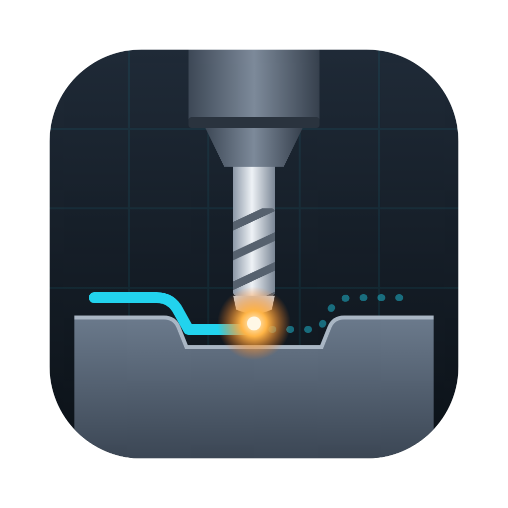
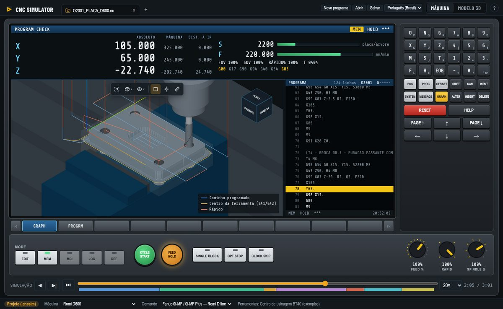
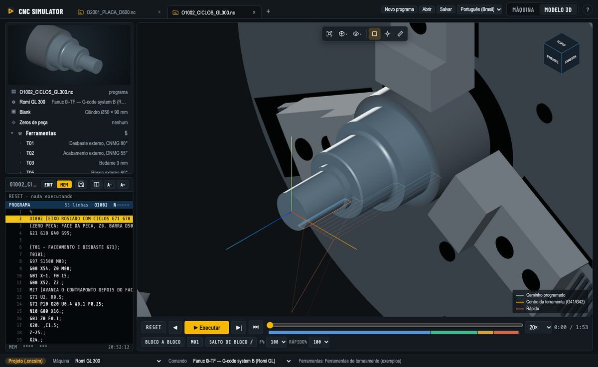
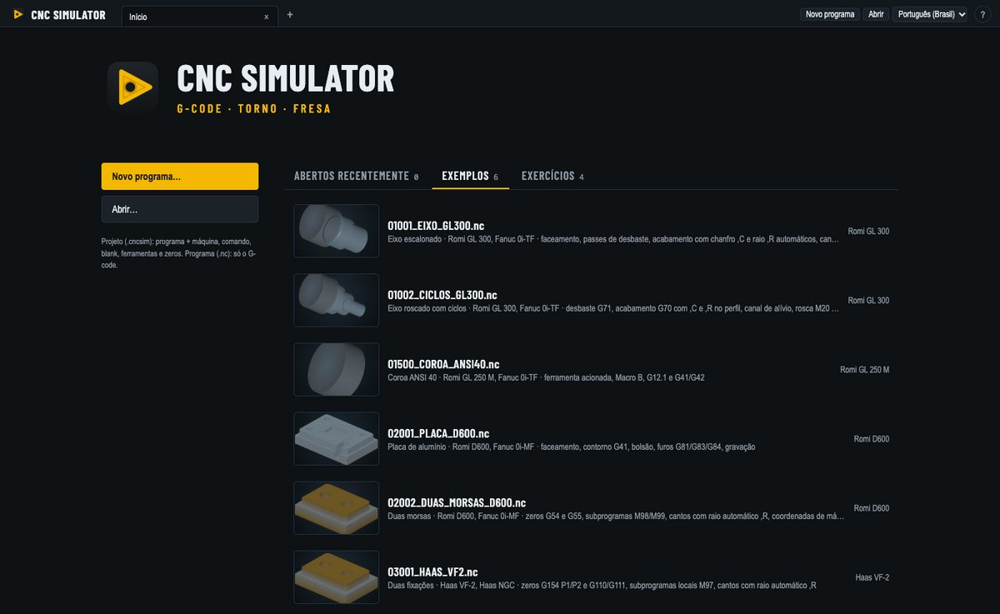

CNC SimulatorRode programas de torno e centro de usinagem como na máquina: comandos Fanuc, Mitsubishi e Haas, programação parametrizada Macro B, os alarmes do próprio comando e a verificação de colisões, em 3D. Sem precisar da máquina.
v0.19.1 · O app não é assinado: no Windows escolha Mais informações → Executar assim mesmo; no macOS clique com o botão direito no app → Abrir.

Escreva o programa, rode bloco a bloco e veja o que cada código faz e qual alarme o comando daria, sem arriscar a máquina.
Confira o que o pós-processador do CAM gerou antes de chegar na máquina: alarmes, fim de curso, colisão de suporte e de placa, corretores.
Gratuito para cada aluno instalar em casa, com exemplos de torno e centro de usinagem e exercícios guiados.
Aprenda e teste Macro B: variáveis, IF/WHILE e chamadas G65 rodam como no comando.


Tornos Romi GL 250 M e GL 300 e centros de usinagem Romi D600, D1000 e D1250 com Fanuc 0i; Mitsubishi M80 torno e centro de usinagem; Haas VF-2 e VF-5/40 com o comando Haas NGC; um centro de usinagem 3 eixos genérico. Cada máquina e comando é um arquivo JSON: veja o guia de contribuição para acrescentar a sua. Todos os códigos de cada comando estão na referência de códigos G e M.
Sim. É software livre e de código aberto sob a licença GPL-3.0: sem cadastro, sem propaganda e sem prazo.
Windows 10 e 11, macOS (Apple Silicon e Intel) e Linux (AppImage e .deb).
Fanuc 0i-TF (torno) e 0i-MF (centro de usinagem), as linhas Romi GL e D, Mitsubishi M80 torno e centro de usinagem, e Haas NGC fresadora. Máquinas e comandos são arquivos JSON, então dá para acrescentar outros.
Sim. Abra o programa, escolha a máquina e o comando e execute: o simulador para nos alarmes do próprio comando e avisa sobre fim de curso, colisão de suporte e de placa e corretores de ferramenta.
Sim: variáveis, funções matemáticas, IF/GOTO, laços WHILE/DO e chamadas de macro G65 rodam como no comando.
Sim. A tela de máquina é como a de um comando, com teclado MDI e painel de operação; o modo aprender explica cada código; e os exercícios guiados conferem o seu programa com a peça esperada.